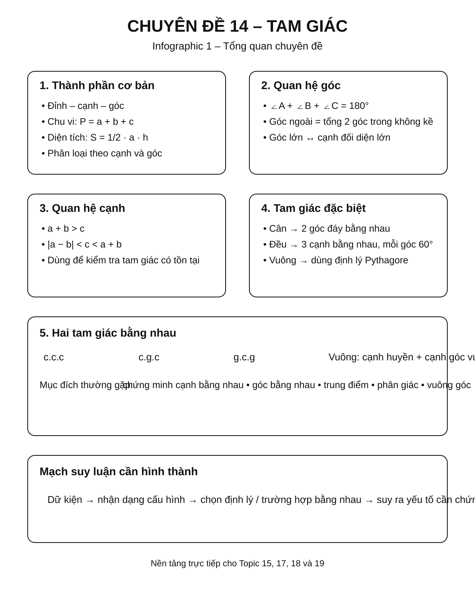
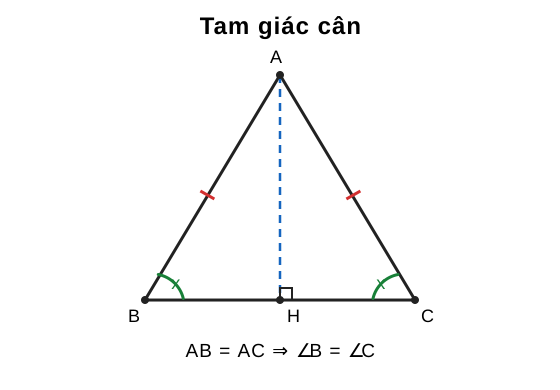
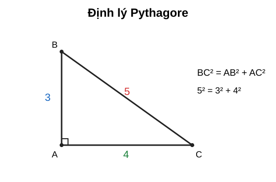
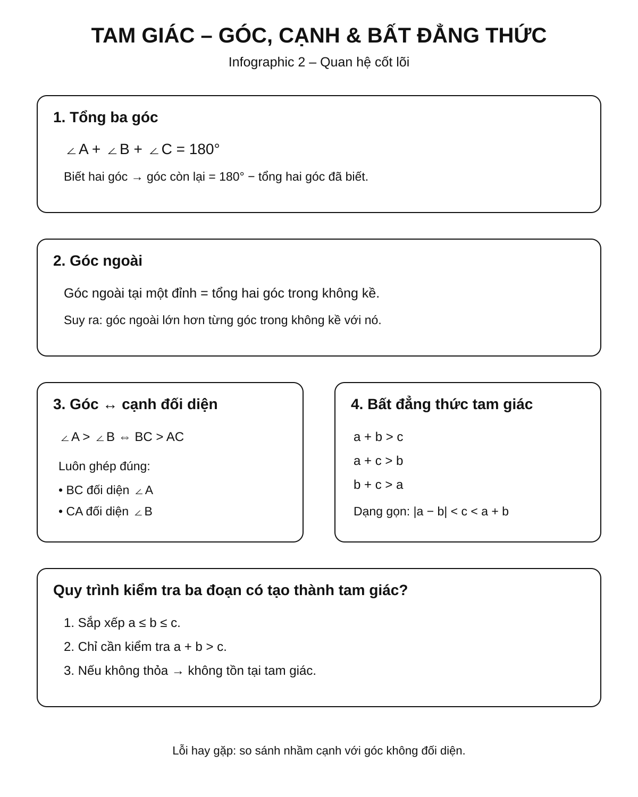
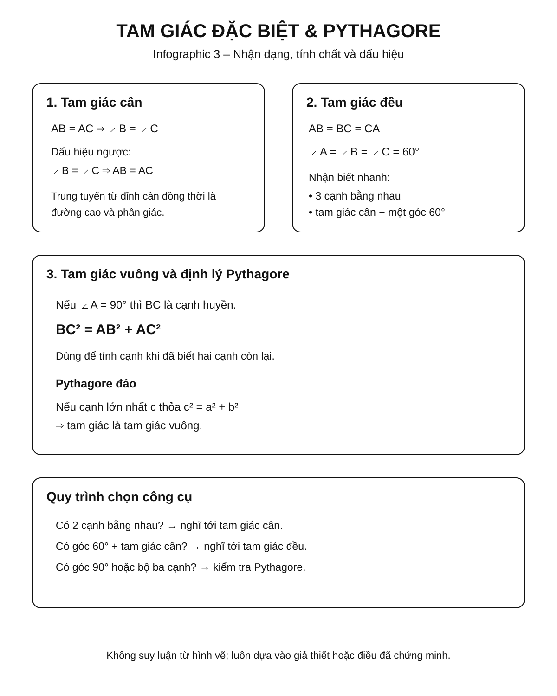
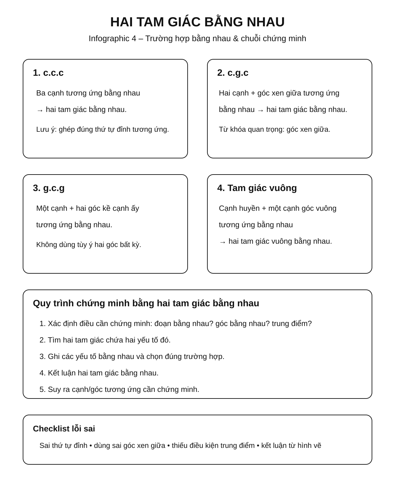

Chuyên đề 14 – Tam giác
Trạng thái: Đã kiểm định nội dung học thuật; cấu trúc Roadmap chuẩn 11 mục.
Lớp trọng tâm: 7 Mạch kiến thức: Hình học Mức ưu tiên: ⭐⭐⭐⭐⭐
Vai trò trong Roadmap: nền tảng trung tâm của Hình học THCS, nối trực tiếp từ Chuyên đề 13 sang các chuyên đề 15, 17, 18 và 19.
🧭 1. Bản đồ kiến thức

Xem nhanh: dùng infographic để nhìn toàn cảnh các mạch góc, cạnh, tam giác đặc biệt và hai tam giác bằng nhau trước khi học chi tiết.
TAM GIÁC
│
├── 1. Thành phần cơ bản
│ ├── Đỉnh – cạnh – góc
│ ├── Chu vi – diện tích
│ └── Phân loại tam giác
│
├── 2. Quan hệ góc
│ ├── Tổng ba góc bằng 180°
│ ├── Góc ngoài
│ └── So sánh góc – cạnh
│
├── 3. Quan hệ cạnh
│ ├── Bất đẳng thức tam giác
│ ├── So sánh cạnh – góc đối diện
│ └── Điều kiện tồn tại tam giác
│
├── 4. Tam giác đặc biệt
│ ├── Tam giác cân
│ ├── Tam giác đều
│ └── Tam giác vuông
│
└── 5. Hai tam giác bằng nhau
├── c.c.c
├── c.g.c
├── g.c.g
└── Trường hợp tam giác vuông
Minh họa trực quan
1. Tam giác cân

Trong tam giác cân, hai góc ở đáy bằng nhau. Đặc biệt, đường trung tuyến kẻ từ đỉnh cân xuống đáy đồng thời là đường cao và đường phân giác của góc ở đỉnh.
2. Định lý Pythagore

Với tam giác
ABCvuông tạiA, cạnh huyền làBCvà định lý Pythagore cho:BC² = AB² + AC².
🎯 2. Mục tiêu cần đạt
Sau khi hoàn thành chuyên đề, học sinh cần:
- [ ] Nhận biết và phân loại được các loại tam giác.
- [ ] Sử dụng thành thạo tổng ba góc trong tam giác và góc ngoài.
- [ ] Hiểu và áp dụng bất đẳng thức tam giác.
- [ ] Biết so sánh cạnh dựa vào góc và ngược lại.
- [ ] Nắm chắc tính chất và dấu hiệu nhận biết tam giác cân, đều, vuông.
- [ ] Nhận dạng đúng các trường hợp bằng nhau của hai tam giác.
- [ ] Biết chọn cặp tam giác thích hợp để chứng minh hai đoạn thẳng hoặc hai góc bằng nhau.
- [ ] Trình bày được một chứng minh hình học theo chuỗi giả thiết → lập luận → kết luận.
📖 3. Kiến thức cốt lõi

Infographic này tóm tắt ba công cụ nền: tổng góc, quan hệ cạnh–góc đối diện và điều kiện tồn tại tam giác.
3.1. Tam giác và ký hiệu
Tam giác ABC được tạo bởi ba điểm A, B, C không thẳng hàng và ba đoạn thẳng:
ABBCCA
Ba góc tương ứng là:
∠A = ∠BAC∠B = ∠ABC∠C = ∠ACB
Chu vi:
P = AB + BC + CA
Diện tích:
S = 1/2 · a · h
trong đó a là độ dài đáy và h là chiều cao tương ứng.
3.2. Phân loại tam giác
Theo cạnh
- Tam giác thường: ba cạnh không có quan hệ đặc biệt.
- Tam giác cân: có hai cạnh bằng nhau.
- Tam giác đều: có ba cạnh bằng nhau.
Theo góc
- Tam giác nhọn: ba góc đều nhỏ hơn
90°. - Tam giác vuông: có một góc bằng
90°. - Tam giác tù: có một góc lớn hơn
90°.
Một tam giác không thể có hai góc vuông hoặc hai góc tù vì tổng ba góc chỉ bằng
180°.
3.3. Tổng ba góc trong tam giác
Với mọi tam giác ABC:
∠A + ∠B + ∠C = 180°
Ví dụ
Nếu ∠A = 50°, ∠B = 60° thì:
∠C = 180° - 50° - 60° = 70°
3.4. Góc ngoài của tam giác
Góc ngoài tại một đỉnh bằng tổng hai góc trong không kề với nó.
Ví dụ, kéo dài BC qua C đến D:
∠ACD = ∠A + ∠B
Do đó góc ngoài luôn lớn hơn mỗi góc trong không kề với nó.
3.5. Quan hệ giữa cạnh và góc đối diện
Trong một tam giác:
- Góc lớn hơn đối diện cạnh lớn hơn.
- Cạnh lớn hơn đối diện góc lớn hơn.
Ví dụ:
Nếu ∠A > ∠B thì BC > AC.
Ngược lại, nếu BC > AC thì ∠A > ∠B.
⚠️ Khi so sánh phải ghép đúng cạnh với góc đối diện.
3.6. Bất đẳng thức tam giác
Trong một tam giác, tổng độ dài hai cạnh bất kỳ lớn hơn cạnh còn lại:
AB + AC > BC
AB + BC > AC
AC + BC > AB
Tương đương, nếu ba độ dài là a, b, c, điều kiện tồn tại tam giác có thể viết gọn:
|a - b| < c < a + b
Ví dụ
Ba đoạn 3 cm, 4 cm, 8 cm không lập thành tam giác vì:
3 + 4 < 8

Dùng bản này để phân biệt nhanh tam giác cân, đều, vuông và hai chiều của định lý Pythagore.
3.7. Tam giác đặc biệt
Tam giác cân
Tam giác ABC cân tại A nếu:
AB = AC
Khi đó:
∠B = ∠C
Nếu M là trung điểm của đáy BC thì trong tam giác cân tại A, đường trung tuyến AM đồng thời là đường cao và đường phân giác:
AM ⟂ BC
và:
∠BAM = ∠MAC
Dấu hiệu nhận biết
Nếu trong một tam giác có hai góc bằng nhau thì tam giác đó cân.
Tức là:
∠B = ∠C ⇒ AB = AC
Tam giác đều
Tam giác đều có ba cạnh bằng nhau:
AB = BC = CA
Suy ra:
∠A = ∠B = ∠C = 60°
Dấu hiệu thường dùng
- Ba cạnh bằng nhau.
- Ba góc bằng nhau.
- Một tam giác cân có một góc bằng
60°thì là tam giác đều.
Tam giác vuông
Tam giác vuông có một góc bằng 90°.
Nếu ∠A = 90° thì:
BClà cạnh huyền.AB,AClà hai cạnh góc vuông.
Định lý Pythagore
Trong tam giác vuông:
BC² = AB² + AC²
Định lý Pythagore đảo
Nếu một tam giác có:
BC² = AB² + AC²
thì tam giác vuông tại A.
Ví dụ
Tam giác có các cạnh 3, 4, 5 là tam giác vuông vì:
3² + 4² = 5²

Trước khi chứng minh, hãy xác định cặp tam giác chứa hai yếu tố cần so sánh rồi chọn đúng trường hợp bằng nhau.
3.8. Hai tam giác bằng nhau
Hai tam giác bằng nhau khi các cạnh và góc tương ứng bằng nhau.
Ký hiệu:
ΔABC = ΔDEF
thì thứ tự chữ cái phải thể hiện đúng sự tương ứng:
A ↔ DB ↔ EC ↔ F
Trường hợp cạnh – cạnh – cạnh (c.c.c)
Nếu ba cạnh của tam giác này lần lượt bằng ba cạnh của tam giác kia thì hai tam giác bằng nhau.
AB = DE
BC = EF
CA = FD
⇒ ΔABC = ΔDEF
Trường hợp cạnh – góc – cạnh (c.g.c)
Nếu hai cạnh và góc xen giữa của tam giác này lần lượt bằng hai cạnh và góc xen giữa của tam giác kia thì hai tam giác bằng nhau.
Từ khóa quan trọng: góc xen giữa.
Trường hợp góc – cạnh – góc (g.c.g)
Nếu một cạnh và hai góc kề cạnh ấy của tam giác này lần lượt bằng một cạnh và hai góc kề cạnh tương ứng của tam giác kia thì hai tam giác bằng nhau.
Trường hợp tam giác vuông
Một trường hợp quan trọng:
Hai tam giác vuông có cạnh huyền và một cạnh góc vuông tương ứng bằng nhau thì bằng nhau.
Đây là công cụ rất hay dùng trong các bài chứng minh trung điểm, phân giác và vuông góc.
🔗 4. Kiến thức liên quan
Kiến thức cần trước
Học sinh cần chắc:
- góc đối đỉnh;
- góc kề bù;
- song song;
- vuông góc;
- so le trong, đồng vị.
Kiến thức sử dụng tiếp
- 15. Các đường đồng quy trong tam giác
- 17. Định lý Thales và tam giác đồng dạng
- 18. Hệ thức lượng trong tam giác vuông
- 19. Đường tròn
🧩 5. Các dạng bài cần nắm vững
Dạng 1 – Tính góc trong tam giác
Dấu hiệu
Biết hai góc, hoặc biết quan hệ giữa các góc.
Phương pháp
Dùng:
∠A + ∠B + ∠C = 180°
Ví dụ
Tam giác ABC có:
∠A = 2∠B, ∠C = 60°.
Ta có:
2∠B + ∠B + 60° = 180°
3∠B = 120°
∠B = 40°
∠A = 80°
Dạng 2 – Tính góc ngoài
Dùng một trong hai cách:
- góc ngoài + góc trong kề =
180°; - góc ngoài = tổng hai góc trong không kề.
Dạng 3 – Kiểm tra ba đoạn có tạo thành tam giác không
Sắp xếp a ≤ b ≤ c, chỉ cần kiểm tra:
a + b > c
Nếu không thỏa, không tồn tại tam giác.
Dạng 4 – Tìm khoảng giá trị của một cạnh
Nếu biết hai cạnh a, b, cạnh thứ ba x phải thỏa:
|a - b| < x < a + b
Ví dụ với hai cạnh 5 và 8:
3 < x < 13
Dạng 5 – So sánh cạnh và góc
Muốn so sánh cạnh → tìm góc đối diện.
Muốn so sánh góc → tìm cạnh đối diện.
Dạng 6 – Nhận biết tam giác cân hoặc đều
Chứng minh tam giác cân
Có thể chứng minh:
- hai cạnh bằng nhau;
- hoặc hai góc bằng nhau.
Chứng minh tam giác đều
Có thể chứng minh:
- ba cạnh bằng nhau;
- ba góc bằng nhau;
- tam giác cân và có một góc
60°.
Dạng 7 – Dùng Pythagore
Tính cạnh
Nếu vuông tại A:
BC² = AB² + AC²
Nhận biết tam giác vuông
Nếu cạnh lớn nhất là c và:
c² = a² + b²
thì tam giác vuông.
Dạng 8 – Chứng minh hai tam giác bằng nhau
Quy trình:
- Chọn đúng hai tam giác cần xét.
- Ghi các yếu tố đã biết bằng nhau.
- Nhận dạng trường hợp bằng nhau.
- Kết luận hai tam giác bằng nhau.
- Suy ra cặp cạnh/góc cần chứng minh.
Mẹo quan trọng
Nếu cần chứng minh AM = AN, hãy tìm hai tam giác chứa AM và AN rồi thử chứng minh chúng bằng nhau.
Dạng 9 – Chứng minh trung điểm
Muốn chứng minh M là trung điểm của AB, cần hai điều kiện:
M ∈ ABMA = MB
Không được chỉ chứng minh MA = MB.
Dạng 10 – Chứng minh phân giác hoặc vuông góc
Thường dùng hai tam giác bằng nhau để suy ra:
- hai góc bằng nhau → tia phân giác;
- hai góc kề bù bằng nhau → mỗi góc
90°→ vuông góc.
🚀 6. Dạng bài thi vào lớp 10
| Dạng | Mức ưu tiên |
|---|---|
| Tính góc từ quan hệ hình học | ⭐⭐⭐⭐ |
| Tam giác cân – tam giác đều | ⭐⭐⭐⭐ |
| Hai tam giác bằng nhau | ⭐⭐⭐⭐⭐ |
| Chứng minh đoạn thẳng bằng nhau | ⭐⭐⭐⭐⭐ |
| Chứng minh góc bằng nhau | ⭐⭐⭐⭐⭐ |
| Pythagore và tam giác vuông | ⭐⭐⭐⭐⭐ |
| Kết hợp tam giác với đường tròn | ⭐⭐⭐⭐⭐ |
| Kết hợp tam giác với đồng dạng | ⭐⭐⭐⭐⭐ |
Trong Roadmap ôn thi vào lớp 10, kiến thức tam giác được xem là nền tảng để xử lý nhiều chuỗi chứng minh kết hợp với các chuyên đề hình học khác.
⚠️ 7. Lỗi sai thường gặp
❌ Lỗi 1 – Ghép sai cạnh và góc đối diện
Trong ΔABC:
- cạnh
BCđối diện∠A; - cạnh
CAđối diện∠B; - cạnh
ABđối diện∠C.
❌ Lỗi 2 – Dùng bất đẳng thức tam giác thiếu điều kiện
Không được chỉ kiểm tra một tổng bất kỳ nếu chưa xác định cạnh lớn nhất.
❌ Lỗi 3 – Dùng c.g.c nhưng góc không xen giữa
Hai cạnh và một góc bất kỳ chưa đủ để kết luận hai tam giác bằng nhau.
❌ Lỗi 4 – Viết sai thứ tự hai tam giác bằng nhau
Nếu A ↔ D, B ↔ E, C ↔ F thì phải viết:
ΔABC = ΔDEF
Thứ tự sai sẽ dẫn đến suy luận cạnh/góc tương ứng sai.
❌ Lỗi 5 – Quên điều kiện thuộc đoạn khi chứng minh trung điểm
MA = MB chưa đủ để kết luận M là trung điểm của AB.
❌ Lỗi 6 – Dùng Pythagore cho tam giác chưa chứng minh vuông
Định lý Pythagore chỉ được dùng sau khi biết tam giác vuông.
📝 8. Luyện tập
Mức 1 – Nhận biết
- Tính góc còn lại của tam giác có hai góc
45°và65°. - Ba đoạn
4, 5, 6có lập thành tam giác không? - Tam giác có hai cạnh bằng nhau gọi là gì?
- Tam giác đều có mỗi góc bằng bao nhiêu độ?
- Xác định cạnh huyền của tam giác vuông tại
A.
Mức 2 – Thông hiểu
- Tam giác
ABCcân tạiA,∠A = 40°. Tính∠B,∠C. - Hai cạnh của một tam giác dài
6và9. Tìm khoảng giá trị của cạnh còn lại. - Tam giác có ba cạnh
6, 8, 10. Chứng minh tam giác vuông. - Trong
ΔABC, biếtAB > AC. So sánh∠Cvà∠B. - Viết các cặp cạnh, góc tương ứng nếu
ΔABC = ΔMNP.
Mức 3 – Vận dụng
- Cho
ΔABCcân tạiA. Tia phân giác của∠AcắtBCtạiM. Chứng minhMB = MC. - Cho
ΔABC,AB = AC. TrênAB,AClấyM,Nsao choAM = AN. Chứng minhBN = CM. - Cho tam giác vuông
ABCtạiA,AB = 6,AC = 8. TínhBC. - Chứng minh một đường thẳng là trung trực bằng cách sử dụng hai tam giác bằng nhau.
Mức 4 – Tổng hợp
- Cho
ΔABCcân tạiA, kẻBD ⟂ ACvàCE ⟂ AB. Chứng minhBD = CE. - Cho tam giác
ABC,Mlà trung điểm củaBC. Trên tia đối củaMAlấyDsao choMD = MA. Chứng minhAB = CDvàAC = BD. - Một bài tổng hợp có song song, tam giác cân và hai tam giác bằng nhau: hãy chỉ rõ mỗi bước dùng định lý nào.
✅ 9. Tự kiểm tra
Mini quiz
Câu 1
Tổng ba góc của một tam giác bằng:
A. 90°
B. 180°
C. 270°
D. 360°
Câu 2
Ba độ dài nào không tạo thành tam giác?
A. 3, 4, 5
B. 4, 4, 7
C. 2, 3, 6
D. 5, 6, 8
Câu 3
Tam giác cân có:
A. ba cạnh bằng nhau B. hai cạnh bằng nhau C. một góc vuông D. ba góc nhọn bắt buộc
Câu 4
Nếu hai tam giác có ba cạnh tương ứng bằng nhau thì chúng bằng nhau theo:
A. c.c.c B. c.g.c C. g.c.g D. Pythagore
Câu 5
Tam giác có cạnh 5, 12, 13 là:
A. tam giác cân B. tam giác đều C. tam giác vuông D. không tồn tại
Đáp án
- B
- C
- B
- A
- C
Checklist tự đánh giá
- [ ] Tôi tính được góc trong và góc ngoài của tam giác.
- [ ] Tôi kiểm tra được điều kiện tồn tại tam giác.
- [ ] Tôi so sánh đúng cạnh và góc đối diện.
- [ ] Tôi nhận biết được tam giác cân, đều, vuông.
- [ ] Tôi sử dụng được định lý Pythagore và định lý đảo.
- [ ] Tôi phân biệt được c.c.c, c.g.c và g.c.g.
- [ ] Tôi viết đúng thứ tự hai tam giác bằng nhau.
- [ ] Tôi biết dùng hai tam giác bằng nhau để chứng minh cạnh hoặc góc bằng nhau.
🔄 10. Liên kết Roadmap
- ← Trước: 13. Góc và quan hệ giữa các đường thẳng
- → Tiếp theo: 15. Các đường đồng quy trong tam giác
- → Liên hệ mạnh: 17. Định lý Thales và tam giác đồng dạng
-
→ Liên hệ mạnh: 18. Hệ thức lượng trong tam giác vuông
-
✏️ Luyện tập: Bài tập Chuyên đề 14
- ✅ Tự kiểm tra: Tự kiểm tra Chuyên đề 14
Xem toàn bộ hệ thống tại Blueprint 25 chuyên đề.
🏁 11. Điều kiện hoàn thành
Chuyên đề được xem là hoàn thành khi học sinh:
- [ ] Đạt tối thiểu 7/10 ở bài Tự kiểm tra, chữa xong các câu sai trước khi chuyển sang Chuyên đề 15.
- [ ] Làm chắc bài tính góc và bất đẳng thức tam giác.
- [ ] Nhận dạng đúng tam giác cân, đều và vuông.
- [ ] Giải được bài Pythagore cơ bản mà không nhầm cạnh huyền.
- [ ] Chứng minh được hai tam giác bằng nhau bằng ít nhất ba trường hợp cơ bản.
- [ ] Dùng được kết quả hai tam giác bằng nhau để chứng minh cạnh/góc tương ứng.
- [ ] Trình bày được một bài chứng minh hình học đầy đủ và có căn cứ.
Mục tiêu cuối: không học tam giác như một tập hợp công thức rời rạc. Hãy xem tam giác là “đơn vị cơ bản” của chứng minh hình học; phần lớn hình phức tạp đều có thể được tách thành các tam giác để phân tích.